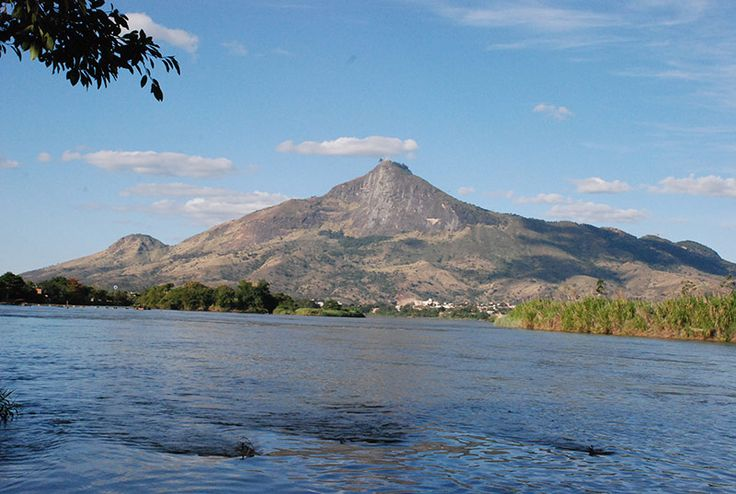
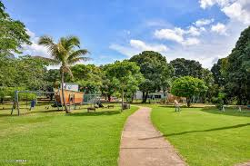
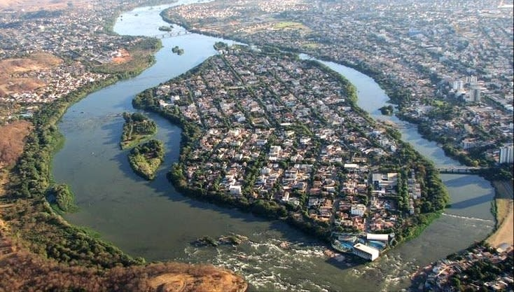

Conhecida como "Princesinha do Vale", famosa pelo voo livre no Pico da Ibituruna. Às margens do Rio Doce, é porta de entrada para aventuras radicais e natureza exuberante.

Um dos melhores pontos para voo livre do mundo, com 1.123 metros de altitude. A rampa de decolagem oferece vista espetacular da cidade e do Rio Doce, atraindo aventureiros de todo o planeta.
Área de preservação com trilhas ecológicas e mirantes naturais. Protege remanescentes de Mata Atlântica e oferece programas de educação ambiental.


Ilha fluvial no Rio Doce, acessível por ponte, com área de lazer e esportes aquáticos. É ponto de encontro para famílias e oferece belas vistas do rio e da cidade.